ペパンのナチュレーヌ。
2023/03/04
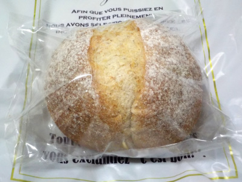
100円です。
ちょっと固めで、香ばしくて味わい深いパンでした。
おつまみにして美味しく食べました。
島根県出雲市大津町3702
2023/03/04

100円です。
ちょっと固めで、香ばしくて味わい深いパンでした。
おつまみにして美味しく食べました。
2021/03/08
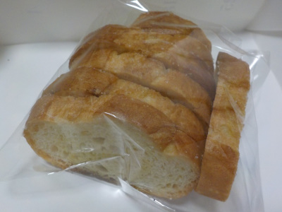
パン屋さんのラスクが130円はお得な感じがします。
パン美味しかったです。バターや砂糖の味付けも好きな味でした。
他のパン屋さんもこれくらいの価格でラスクを販売してくれたらいいのになー。
2019/01/15
平べったくてちょっと小さなクリームパンです。
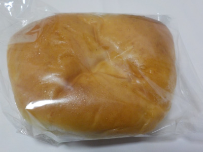
見た目、ちょっとものたりない感じがしますが食べると満足感がありました。
中に入っているカスタードクリームが美味しかったです。美味しいカスタードプリンみたいでした。
この美味しさは忘れないでリピートしようって思いました。
2018/10/29
小さくカットされたオレンジとレーズンのドライフルーツが入ったパンです。
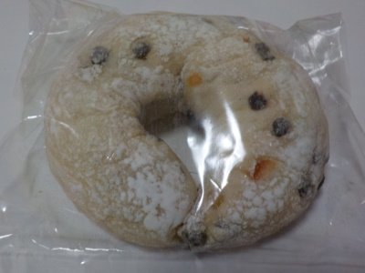
ふんわりしたパンとドライフルールの優しい甘さが合ってて美味しかったです。
こうゆうのが毎日朝食で食べれたら贅沢でいいなー。
庶民はフルーツグラノーラかな。
2014/04/21
パイの真ん中にクリームチーズが入ったパンです。
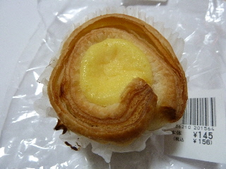
クリームチーズの味が特徴的です。
塩味と砂糖味が効いてて甘辛で、濃い味でした。
パイはふっくらとしていて、やさしい味でした。
メリハリのあるパンですね。
2013/12/05
小さめのパンに卵がこんもりと盛ってあるベーコンエッグです。
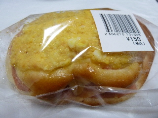
濃い味のパンかなーっと思ったですが、食べてみるとあっさりでした。
やさしい味です。
素材の味が味わえました。
2012/11/12
ザントクーヘンって名前の商品です。
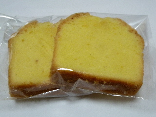
「クーヘン」って名前があるせいか、なんとなくバウムクーヘンっぽい味でした。
パウンドケーキとバームクーヘンの中間な感じです。
美味しい焼き菓子でした。
2012/06/28
ペパンのラスクはちょっと濃いめの焼き色でした。
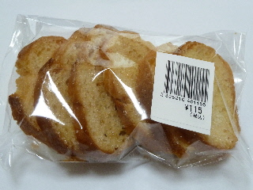
シュガーラスクで、ちょっとバリバリ感のある歯ごたえでした。
コンガリとやいてあり、おこげ風味の味わいがありました。
2012/06/28
ペパンのごまパンです。
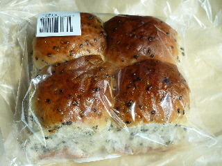
ふんわりしてて甘いパンに、ゴマが沢山入ったパンです。
私はゴマが好きなので、このパンは好きです。
ゴマの風味がいいです。
2011/06/16
ラピタ南店でペパンのパンを買いました。大津町のお店で買うのもいいですが、駐車場が広くて止めやすいのでラピタ南で買うのもいいです。
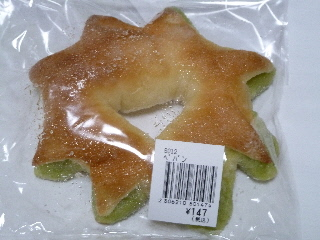
雑誌なんかによくこのパンが掲載されているので、ペパンのパンといえばこのパンを想像するんですが、今までこのパンは食べたことなかったです。
食べてみるとメロンパン味でした。パンは普通にパンなんですが、緑色の部分が濃いメロンパン味になってました。夕張メロン風な感じがしました。
2009/8/16
ちょっと色が濃いレーズン食パンですね。その分濃い味でした。
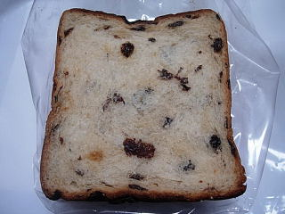
回りはコンガリと焼けているんですが、中はふんわりとしてました。レーズンがあるのでしっとりもしていました。
苦味や甘味があり、味わい深いパンでした。
そのままでも、トーストしても美味しかったです。
2009/5/21
チョコチップが上にも中にも入ったパンです。
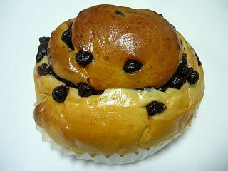
チョコがいっぱい入ってますが、チョコ自体の味が甘過ぎず、美味しいチョコでした。
ふんわりとしてて、ライトな味のパンと、チョコとの相性がよく美味しかったです。
ラピタ南店で購入しました。
2006/5/7
ペパンのごまパンを買いました。買ったのはラピタ南店です。なかなかペパンって通らない所にあるので、スーパーで売ってると買い易くていいですね。
胡麻パンはふんわり柔らかくできてて、軽い感じでパクパク食べれます。
ゴマが入っただけのパンなんですけど、パン生地自体が甘く作ってあるので、菓子パンみたいな感じでおやつ感覚で食べれました。
ラピタ南店でも購入出来ます。